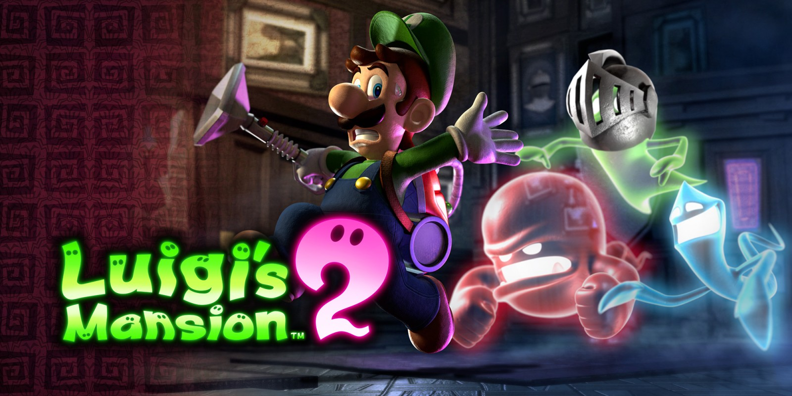

Jeux vidéo populaires
Retrouvez les critiques des derniers jeux vidéo, des tests de gameplay et des classements des meilleurs jeux !
- Dofus : Dofus prend place dans le Monde des Douze, un univers médiéval-fantastique. Les joueurs doivent retrouver six Dofus primordiaux, des œufs de dragons conférant une grande puissance à leur porteur, qui sont dispersés aux quatre coins du monde. Le jeu, en monde ouvert, laisse place à la libre orientation des joueurs, pouvant choisir de s'orienter dans le Joueurs contre Joueurs, Joueurs contre Monstres ou l'économie.
- Luigi's Mansion 2 : Lors d'une nuit pluvieuse dans la Vallée des Ombres, le Roi Boo brise la Lune noire. De l'autre côté de la vallée se trouve le laboratoire du Professeur Karl Tastroff. Il étudie les fantômes quand ceux-ci se mettent à agir de façon étrange. Ils détruisent alors tout sur leurs passages et se réfugient dans différents manoirs lugubres de la Vallée des Ombres. K. Tastroff convoque alors Luigi dans son laboratoire et lui demande de l'aide. En effet, la raison pour laquelle les fantômes se conduisent de manière étrange est le fait que la Lune noire, qui permet de calmer le tempérament agressif des fantômes, a été brisée. Luigi doit alors s'aventurer dans un total de cinq manoirs pour trouver les fragments de la Lune noire et remettre de l'ordre dans la Vallée des Ombres. Mais pour commencer, Luigi doit d'abord trouver l'Ectoblast 5000…
- Pokémon X et Y : L'action se situe dans la région fictive de Kalos, inspirée de la France. Elle est constituée de plusieurs villes peuplées par des humains et de routes terrestres ou maritimes qui les relient entre elles. Chaque zone géographique de la région est habitée par différentes espèces de créatures appelées Pokémon, chacune des espèces possédant une zone de répartition différente ; il en existe trois, le centre, la côte et les monts.
Le ou la protagoniste débute dans la ville de Bourg Croquis. Le joueur aura à choisir entre le protagoniste masculin (Kalem) ou le protagoniste féminin (Serena). Il ou elle part avec quatre compagnons. Parmi eux, Tierno proposera au joueur de choisir entre trois Pokémon de départ, Marisson, Feunnec et Grenousse, puis Trovato lui distribuera un Pokédex, l'encyclopédie fictive recensant les différentes espèces de Pokémon.
Le joueur entame alors une quête à travers Kalos, capturant les Pokémon sauvages, les entraînant et combattant avec ceux des autres dresseurs Pokémon, avec pour but de d'obtenir le titre de « Maître Pokémon ». Pour cela, il rencontrera dans certaines villes des établissements spéciaux appelées « arènes », à l'intérieur desquelles demeure un Champion que le joueur devra battre dans un combat Pokémon pour obtenir un badge. Une fois les huit badges acquis, le joueur sera autorisé à combattre la Ligue Pokémon, qui se compose des meilleurs dresseurs de Pokémon de la région. Le héros devra défaire les quatre membres de la Ligue puis, in fine, le maître de la Ligue pour devenir Maître Pokémon.
Tout au long du jeu, le joueur devra combattre les forces de la Team Flare.

